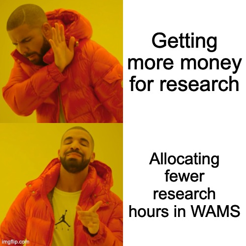

With that in mind, let’s talk about something that is in all of our futures: this year’s formal workload allocation
Overall, around 30% of department time is allocated to research.
In the current draft workload model, 31000 out of 99000 allocated hours are for research and scholarship activities.
For academic staff with research contracts, the allocation is 26000 out of 61000 hours: around 40%.
(Current draft does not account for this year’s MSc projects yet so these figures will change a little.)
These figures include “university funded research”, plus time allocated to PGR students and grants.
The new university strategy has a KPI for research funding:
TRAC research recovery rates (59% → 65–70%)
(The only other research KPI concerns the proportion of internationally-coauthored research papers.)
\[ \text{Recovery rate} = \frac{\text{external research income}}{\text{cost of research}} \]
To increase this ratio we can either win more funding or invest less in research.
Can you guess which we’re going to try?v
The university uses WAMS data to calculate the cost of its investment in research.
It calculates what percentage of your time was spent on university-funded research.
Standard allocation = 400 / 1613 hours = 24.7% of your time.
This is the number that feeds into the denominator of the TRAC calculation.
In an email this summer, the Dean announced that the default research allocation should be reduced to 200 hours.
He proposed that the default position should be not to fill this 200 hours with other things.
So the number on the spreadsheet is the only thing that changes.
How does this help?
Because of the WAMS/TRAC calculation, reducing this number without changing your work allocation reduces the calculated cost of research!
\[ 200/1413 = 14.2\% \]
Filling the 200 hours with other work does not help much:
\[ 200/1613 = 12.3\% \]
So this sleight of hand will help achieve a KPI without doing anything of any value.

Not really…
But remember that we are in a world where “research income” is defined to be the amount of money spent on research.
We’re through the looking glass.
We make futures.
We also invest quite a bit in research infrastructure.
2026/27:
We are able to make investments in research this year.
Each research group lead holds a budget to invest in their group’s research. Tom as DHoD (research) has further funds. All these budgets can be increased if there is a need.